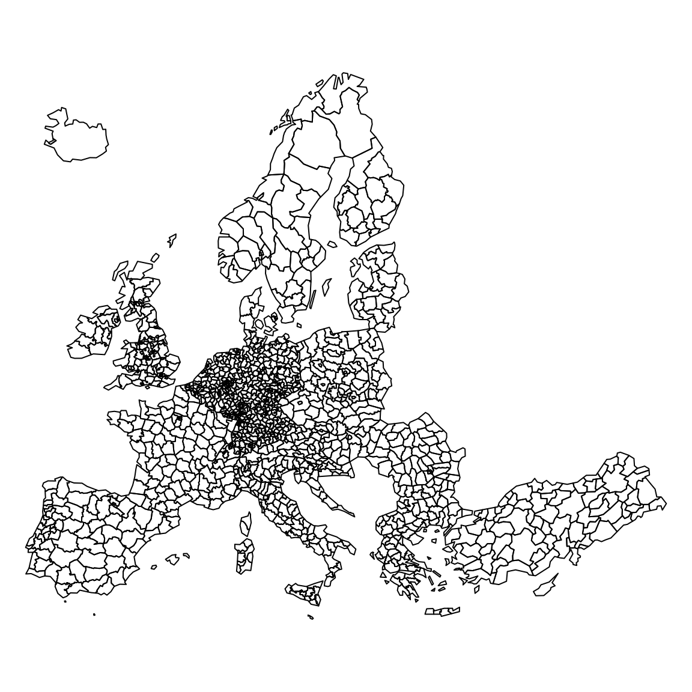
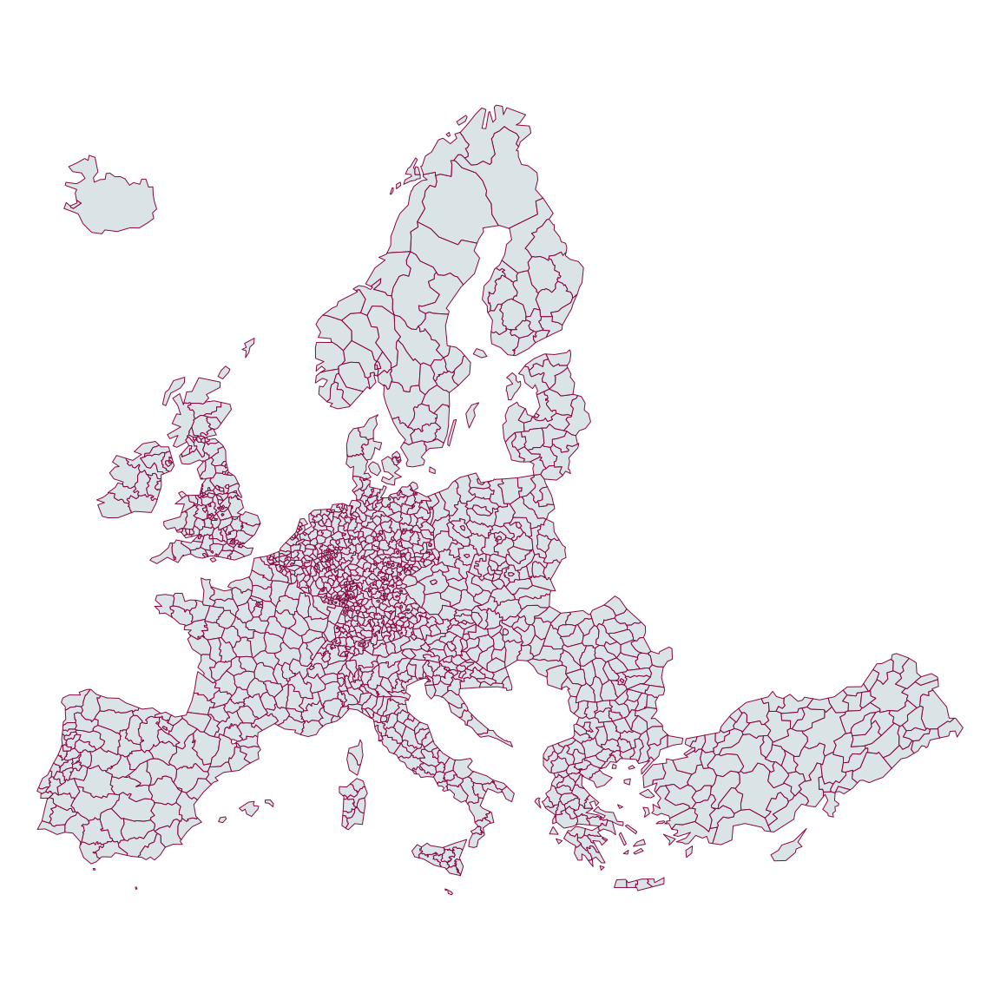
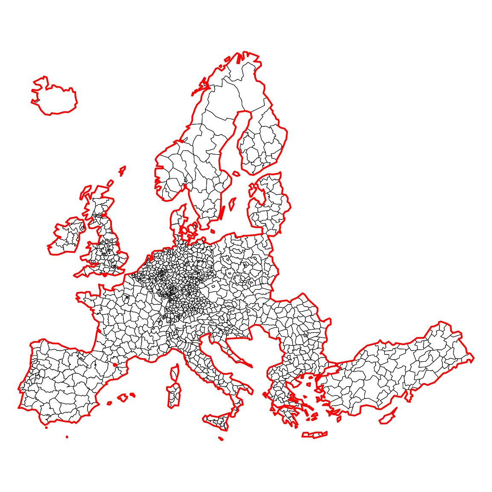

Cartographie avec R, le package cartography

SEMIN-R
Museum National d’Histoire Naturelle | Vendredi 16 juin 2017
Timothée Giraud
UMS RIATE
http://rgeomatic.hypotheses.org/
Les fonctionnalités spatiales de R
Les indispensables
3 packages sont incontournables
rgdal
Import/export d’objets spatiaux et gestion des projections cartographiques
rgdal est une interface entre R et les librairies GDAL (Geospatial Data Abstraction Library) et PROJ4.
library("rgdal")
nuts3 <- readOGR(dsn = "data", layer = "nuts3", verbose = TRUE)OGR data source with driver: ESRI Shapefile
Source: "data", layer: "nuts3"
with 1448 features
It has 7 fieldssp
Manipulation et affichage d’objets spatiaux
sp fournit des classes et des methodes pour les données spatiales dans R.
library("sp")
head(nuts3@data)| id | birth_2008 | death_2008 | gdppps1999 | gdppps2008 | pop1999 | pop2008 | |
|---|---|---|---|---|---|---|---|
| 0 | AT111 | 272 | 445 | 509 | 641 | 39148.91 | 37452 |
| 1 | AT112 | 1195 | 1480 | 2262 | 3272 | 137469.46 | 146383 |
| 2 | AT113 | 748 | 1142 | 1368 | 1783 | 100113.63 | 97350 |
| 3 | AT121 | 2480 | 2119 | 4091 | 5807 | 238591.26 | 241083 |
| 4 | AT122 | 2266 | 2577 | 4130 | 5774 | 244959.00 | 251838 |
| 5 | AT123 | 1363 | 1392 | 3098 | 4504 | 144269.11 | 147468 |
plot(nuts3)
plot(nuts3, col = "#DAE3E6", border = "#8A0641", lwd = 0.5)
rgeos
Géotraitements
rgeos donne accès à la librairie d’opérations spatiales GEOS (Geometry Engine - Open Source) qui permet notamment d’effectuer les géotraitements suivants :
- Area / Perimeter
- Distances
- Dissolve
- Buffer
- Overlap / intersect / difference
- Contains / within
- Union
- …
Agrégation des polygones / dissolve
library("rgeos")
europe <- gUnaryUnion(spgeom = nuts3)
plot(nuts3, lwd = 0.5)
plot(europe, lwd = 2, border = "red", add=T)
Création de zones tampons / buffer
library("rgeos")
europeBuffer <- gBuffer(spgeom = europe, width = 50000)
plot(europe, col = "#92C5D6")
plot(europeBuffer, add = T, border = "red")
Le futur : le package sf
Le package cartography
Installation
Version stable
Version de développement
Version avec sf
Les données
Démonstration
Ressources
Cette présentation est disponible ici
Package cartography
La page GitHub du package cartography
C’est dans ce dépôt GitHub que se déroule le développement du package et que se tiennent les discussions à son sujet.
Billets de blogs, tutoriels, présentations
Demo codes in the R graph Gallery (EN)
Create and integrate maps in your R workflow with the cartography package (EN)
De superbes cartes thématiques…(FR)
Le package cartography a un an(FR)
Cartographie avec R : le package cartography (FR)
R pour les cartographes (FR)
Comment faire un carton avec R? (FR - How to build inset maps)
Tutoriel - Cartographie avec R (FR)
Cartographie et traitement de l’information géographique avec R (FR)
R pour les cartographes : le package cartography (FR)
Le blog http://rgeomatic.hypotheses.org/
Package sf
La page GitHub du package sf
C’est dans ce dépôt GitHub que se déroule le développement du package et que se tiennent les discussions à son sujet.
Les ressources publiées par Edzer Pebesma
Le créateur et maintainer de sf a publié un certain de nombre de vignettes et de billets autour du package.
Vignettes
- Simple Features for R Explication très détaillée des principes et du fonctionnement du package.
- Reading, Writing and Converting Simple Features Comment importer et exporter des objets.
- Manipulating Simple Feature Geometries Comment manipuler les objets
sf, géotraitements, projections…
Billets de blog
Migration de
spversfUn tableau de migration de
spverssfpour passer de l’utilisation des packagessp,rgeosetrgdalà l’utilisation desf.
Billets de blogs / tutoriels
Faire des cartes avec R - Introduction au package sf - Santiago Mora
Tidy spatial data in R: using dplyr, tidyr, and ggplot2 with sf - Matt Strimas-Mackey
First Impressions From sf – The Simple Features R Package - Geographic Data Science Lab
Spatial analysis pipelines with simple features in R - Kyle Walker
Spatial analysis in R with the sf package - rhodyRstats
Landscape Ecology with R:A tutorial with raster and sf - Jeffrey W. Hollister
Mapping “France at night” with the new sf package - Sharp Sight Labs
La cartographie

Béguin & Pumain (2003)
- Michelle Béguin et Denise Pumain. “La représentation des données géographiques, Statistique et cartographie.” (2003). Paris, Armand Colin, Coll. Cursus, 192p.
!
- Nicolas Lambert et Christine Zanin. “Manuel de cartographie: principes, méthodes, applications.” (2016). Paris, Armand Colin, Coll. Cursus, 224p.